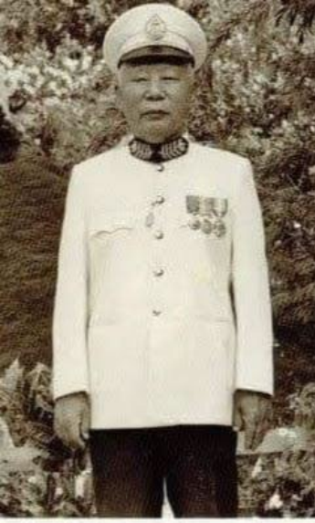
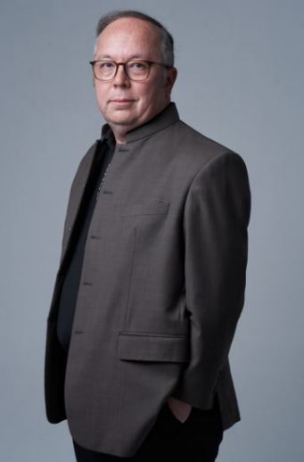
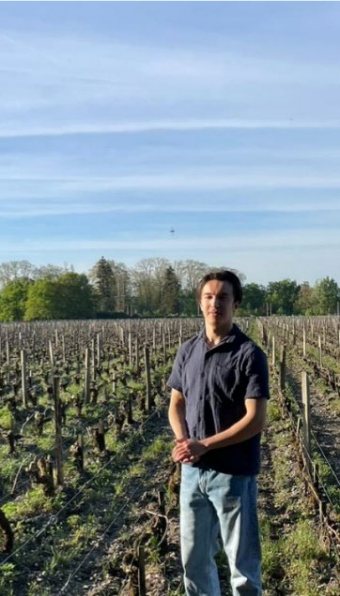

Le pionnier
Damrong Vongsuravatana

L'histoire commence il y a près d'un siècle, avec l'esprit entreprenant et curieux de Damrong Vongsuravatana, un homme dont la vie incarna le croisement des cultures, de l'innovation et de l'ambition.
Damrong était un Sino-Thaï d'ascendance Teochew, né dans une famille installée au Siam depuis trois générations. Malgré leur intégration à la société thaïe, les Vongsuravatana restaient profondément attachés à leur héritage chinois. Damrong, cependant, rompit avec la tradition en épousant une Thaïlandaise de Nakhon Pathom, fille d'un fonctionnaire des chemins de fer — premier signe de son esprit indépendant et de son ouverture au mélange des mondes.
Homme de grande initiative, Damrong bâtit une entreprise prospère à Nakhon Ratchasima dans les années 1930. Ses activités comprenaient une rizerie, une fabrique de glace, une société de négoce et un hôtel — chacune reflétant son sens aigu de l'opportunité et sa volonté de moderniser. Après la Seconde Guerre mondiale, il construisit le premier bâtiment doté d'un ascenseur à Korat. Il accueillit même des équipes de tournage internationales, dont celle de Bruce Lee, pour filmer des scènes dans sa fabrique de glace de Pak Chong.
Ses centres d'intérêt ne se limitaient pas aux affaires. Attiré par l'art ancien de la distillation, il acquit la concession officielle de distillation du district de Nakhon Ratchasima. Mais derrière l'entrepreneur dynamique se cachait un homme de contemplation : Damrong avait passé plusieurs années dans un monastère bouddhiste, s'immergeant dans l'étude de langues anciennes comme le pali. Pendant de nombreuses années, il présida l'Association bouddhiste provinciale, alliant engagement spirituel et leadership civique.
C'est peut-être cette profonde appréciation de la culture et du savoir qui façonna sa vision pour sa famille. Convaincu du pouvoir de l'éducation, il encouragea ses dix-neuf enfants à poursuivre des études supérieures et les envoya aux quatre coins du monde — Chine, Japon, États-Unis, Allemagne et France. Ce faisant, Damrong jeta les bases d'une lignée qui prolongerait son héritage bien au-delà des frontières de la Thaïlande.
Le fondateur
Pathom Vongsuravatana
Son fils aîné, Pathom Vongsuravatana, suivit une voie façonnée par la curiosité intellectuelle et l'esprit d'entreprise. Au cours de sa vie, il occupa diverses fonctions — professeur d'université, homme d'affaires et diplomate.
Après un doctorat en droit obtenu à l'Université de Bordeaux en 1958, il retourna en Thaïlande pour enseigner le droit à l'Université de Bangkok. Mais sa vie personnelle prit un tournant décisif : en 1957, il épousa une Française de Tours, et dès 1965, il choisit de s'installer définitivement en France.
Durant ses études à Bordeaux, Pathom découvrit une profonde passion pour les vins et spiritueux français, nourrie sous la houlette du célèbre œnologue Émile Peynaud, auteur du Goût du vin. Dans les années 1960, il développa une activité internationale dans l'armagnac, le cognac et le whisky, avant de se tourner vers la production de vin dans les années 1980 — d'abord dans l'Entre-deux-Mers, puis sur le terroir prestigieux de Saint-Émilion.
Sa carrière fut marquée par plusieurs distinctions. Il reçut le rare privilège de faire figurer sur ses étiquettes l'emblème officiel créé par Sa Majesté le Roi de Thaïlande pour son jubilé d'or. C'est aussi Pathom qui introduisit et expliqua le concept du « French Paradox » à Sa Majesté, croisement symbolique de ses univers culturel et professionnel.
En France, son travail attira l'attention de la presse. Dans les années 1980, Objectif Aquitaine le décrivit comme « l'homme qui fait couler l'armagnac », tandis que Le Monde lui consacra une pleine page sous le titre « Cocktail Thaï ». Dans les années 1990, le Bangkok Post le qualifia de « roi du vin thaïlandais », et Sud-Ouest rendit hommage à « un Thaïlandais dans les vignes ».
Malgré cette reconnaissance, Pathom ne s'éloigna jamais de ses racines intellectuelles. Ancien élève de Jacques Ellul à l'Université de Bordeaux, il se retira des affaires en 1995 pour se consacrer pleinement à son rôle de Consul honoraire du Royaume de Thaïlande à Bordeaux — une fonction par laquelle il continua de cultiver des liens précieux entre son pays natal et son pays d'adoption.
Le vigneron
Raphaël Vongsuravatana

Son fils Raphaël reprit le flambeau, devenant lui aussi à la fois universitaire et vigneron. Troisième enfant du Dr Pathom, il est docteur en histoire et s'imposa très tôt comme écrivain.
Il reçut à seulement vingt-deux ans le prix Auguste-Pavie de l'Académie des sciences d'outre-mer à Paris pour son premier livre, qui lui valut également une médaille de l'Académie de marine. Parallèlement à son travail d'érudit, il poursuivit des études d'œnologie à la Faculté d'œnologie de Bordeaux et prit en charge la production viticole familiale.
Pendant deux décennies, il fut vigneron à Saint-Émilion, où le Grand Cru qu'il produisit fut régulièrement remarqué dans le Guide Hachette des Vins — obtenant deux étoiles pour plusieurs millésimes — et salué par la presse vinicole européenne. Son style en vins rouges se distingue par un grand respect du fruit et du terroir.
Convaincu que le changement climatique aurait des effets durables sur le « goût du vin » et désireux d'explorer au-delà du seul rouge, il décida en 2016 de faire revivre l'activité viticole familiale dans la Vallée de la Loire, région natale de sa mère, Martine Roy, née à Tours. Le choix se porta naturellement sur l'appellation Saumur, dont les vins s'accordent particulièrement bien avec la cuisine thaïe.
Ainsi débuta le nouveau chapitre du Château de la Bretaudière, une propriété datant du XIIIe siècle, dont la tradition viticole est attestée dès le XVIe siècle. Raphaël y produit non seulement du vin rouge, mais aussi du blanc, du rosé, des vins liquoreux et un effervescent élaboré selon la méthode champenoise traditionnelle. Marié à une Française, il a cinq enfants, qui porteront tous la double lignée française et thaïe qui définit l'histoire de leur famille.
La génération suivante
Colomban Vongsuravatana

En 2020, Raphaël renonça à la vinification pour se consacrer à sa carrière universitaire et à ses recherches en géoéconomie. C'est là que la génération suivante prend le relais.
Cette nouvelle génération est aujourd'hui incarnée par Colomban Vongsuravatana, troisième enfant de Raphaël. Très attentif aux impératifs du développement durable et de la santé, il s'oriente vers une production respectueuse de la terre et de l'environnement, de manière éco-responsable.
Avec ses premiers millésimes, il entend rendre hommage à ses origines thaïes en reprenant le nom de son grand-père, Pathom, qui signifie aussi « n° 1 » en thaï. S'appuyant sur l'héritage familial tout en y insufflant sa propre vision, il s'attache à révéler l'identité singulière de son terroir à travers des cuvées résolument modernes et inspirées.